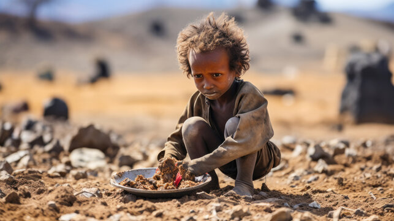
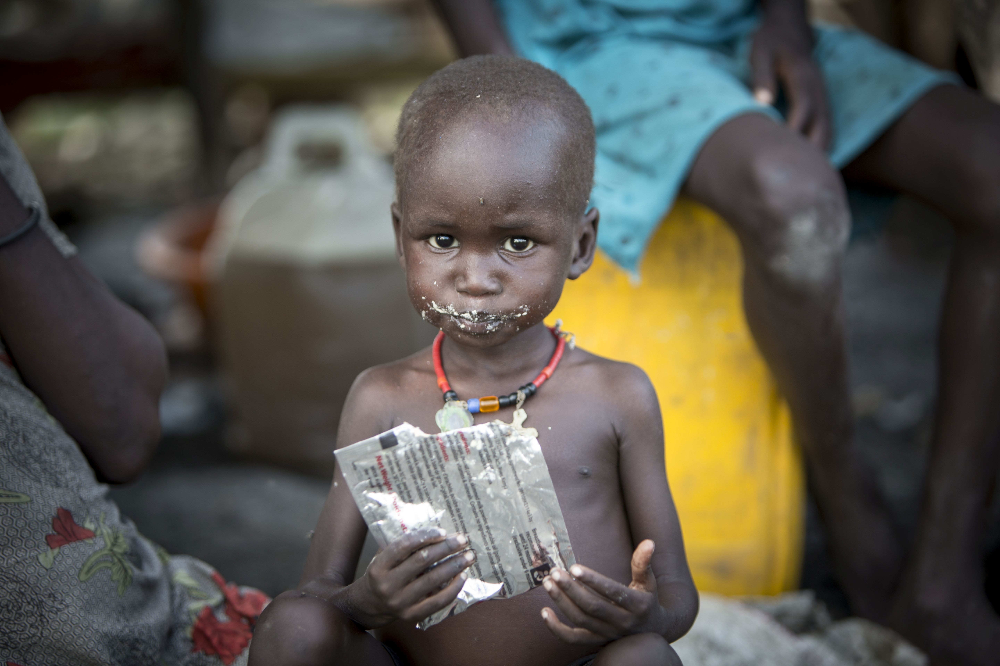
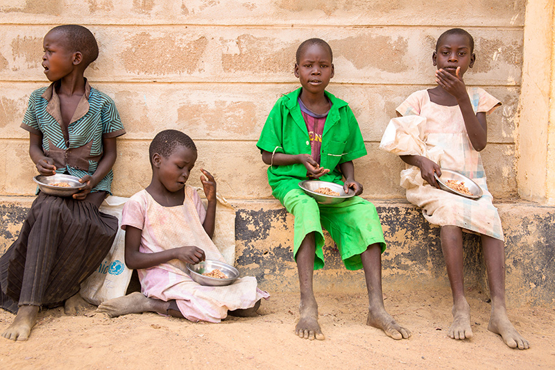
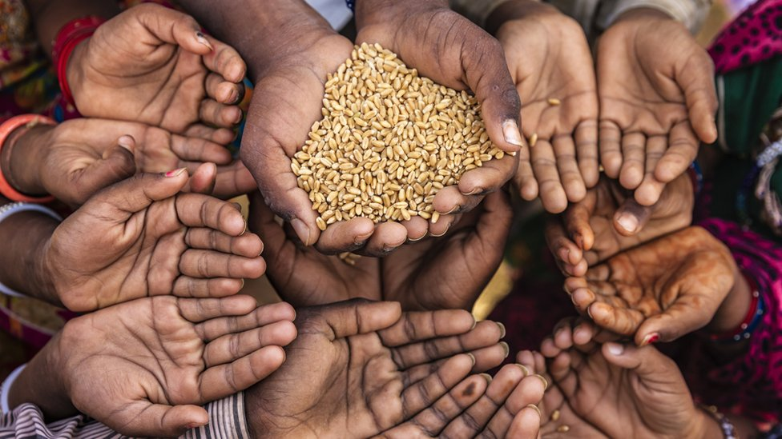

Zero Hunger is one of the United Nations' 17 Sustainable Development Goals (SDGs), which were created in 2015. It's officially known as SDG 2. The objective is to eradicate hunger, achieve food security, enhance nutrition, and promote sustainable agriculture by 2030
Poverty is the primary cause of hunger, as it limits access to sufficient healthy food. Conflict and political instability destabilize food production and delivery. Climate change and natural calamities, such as droughts and floods, decimate crops and food supply. Many individuals lack access to basic resources such as land and farming equipment. Inequitable food distribution systems, as well as food waste, contribute to food insecurity. Populations are weakened due to health difficulties and malnutrition. Limited knowledge and skills impede efficient resource usage. Addressing these issues necessitates coordinated measures to promote economic growth, improve food distribution, strengthen resilience to climate effects, and empower communities.
To successfully tackle hunger, we must prioritize economic growth by reducing poverty and increasing buying power. Investing in sustainable agriculture, including research and infrastructure, increases food production and adaptability to climate change. Food aid and cash transfers are examples of social protection programs that offer safety nets to needy communities. Nutrition and hygiene education enhances health outcomes, and efficient food delivery systems decrease waste while ensuring fair access. To achieve long-term food security, peace-building initiatives and environmental sustainability must be combined with community empowerment and international collaboration.
Everyone can contribute to achieving Zero Hunger. You can get involved by supporting local food banks, advocating for policy changes, and raising awareness about hunger issues in your community.
About 690 million people worldwide are undernourished.
One in nine people around the world go to bed hungry each night.
Poor nutrition causes nearly half of deaths in children under five.